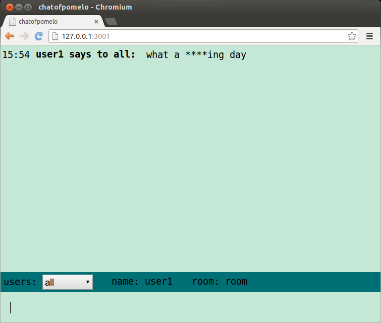

In practice, we often need to do some pre-work on the request and after the request being handled, we also need to do some post-work to clean up. It is a very common requirement, which is provided in pomelo namely filter. In pomelo, filter is divided into before filter and after filter， before filter does pre-work while after filter does post-work. Before a request is handled by a certain handler, it will be processed by a before filter-chain. And after the request is handled by a certain handler, an after-chain will be executed to do some clean up. It should be noted that in the after filter chain, it only does some cleanup and should not modify the content of the response to the client as the response is sent to client at this time.
Our example is a chat application, in a chat room, when someone abusing, they often need to be shielded. Here, we will add a abusing filter to shield abuses to show how to use filter in pomelo. The code is in the branch tutorial-abuse-filter, you can use the following command to switch:
$ git checkout tutorial-abuse-filter
Filter is an object, it is often defined like below:
var Filter = function (<args>) {
// ....
};
Filter.prototype.before = function (msg, session, next) {
// ...
}
Filter.prototype.after = function (err, msg, session, resp, next) {
// ...
}
If you have defined before method, then you can use it as a before filter, if after method defined, it can be as an after filter.
For before filter , its two parameters are msg and session, where msg may be the original user request or it may be result of being processed by the previous filters. At backend server, session is a BackendSession and if at frontend server, it is a FrondendSession, and directly modify session only affect the next filters and will not affect the original session maintained by session service. Of course, if you really need to modify the original session, for example, binding an uid to a session, you can call the method of BackendSessionService.
For after filter, err is error produced by the handling before and resp is the response to client. Aftering filter defined, then it can be configured to application by application.filter.
Here we need a abuse-filter Filter, in order to keep simple, we only do fuck filtering. In the before filter, if the user's speech contains the word fuck, then the word will be replaced with **** and we will add a tag to this session. In the after filter, we check the tag on all the session and then record the name of the user who abused, to keep simple, we just print its username to console for demonstrating. Our abuseFilter code is presented as follows :
/ / AbuseFilter.js
module.exports = function () {
return new Filter ();
}
var Filter = function () {
};
Filter.prototype.before = function (msg, session, next) {
if (msg.content.indexOf ('fuck')! == -1) {
session.__abuse__ = true;
msg.content = msg.content.replace ('fuck', '****');
}
next ();
};
Filter.prototype.after = function (err, msg, session, resp, next) {
if (session.__abuse__) {
var user_info = session.uid.split ('*');
console.log ('abuse:' + user_info[0] + "at room" + user_info[1]);
}
next (err);
};
After defining the filter, we need to configure it to the chat server, add the following code into app.js:
// app.js
var abuseFilter = require('./app/servers/chat/filter/abuseFilter');
app.configure('production|development', 'chat', function() {
app.filter(abuseFilter());
}
Well, let us test our new chat application, speaking "what a fucking day" and seeing the result, it is shown as follows:

It may not be very reasonable to use filter to do abusing word replacement, but here it is justifiable as it is used to demonstrate how to use filter. Pomelo provides several builtin filters, including toobusy, timeout , etc..
before and after can be both or either defined in a filter. When configuring the filter to application, if before and after both are defined, calling app.filter to complete configration. Otherwise, calling app.before or app.after.
In this section, we use the filter mechanism provided by pomelo to filter the abusing word for our chat example. It is very simple and may not be reasonable, but it is justifiable to merely demonstrate how to use filter in pomelo. Next, we will use dict-based route compression to continue to improve our chat application.